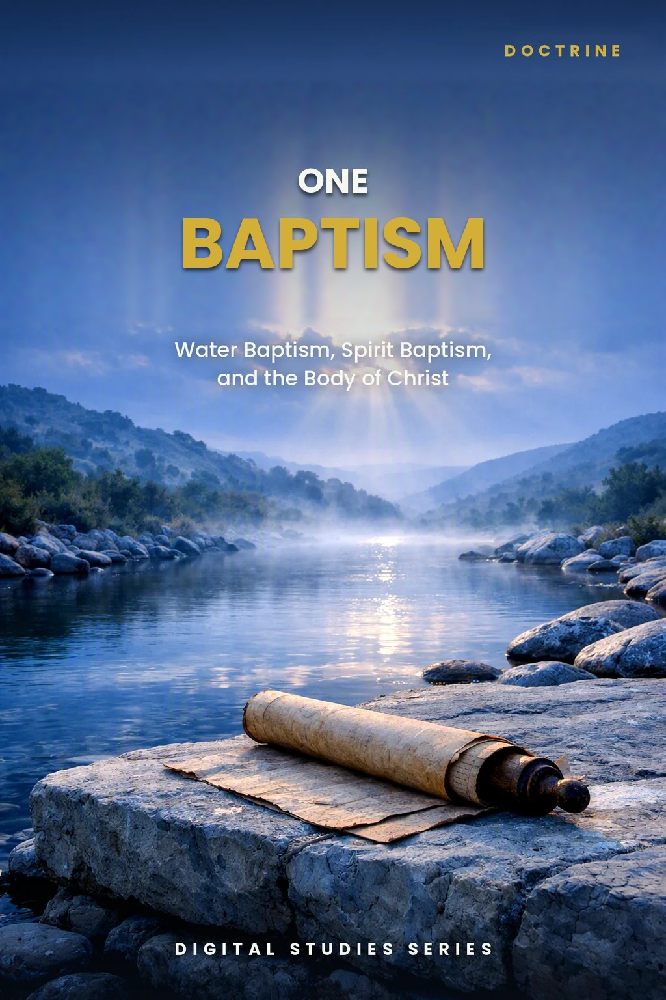
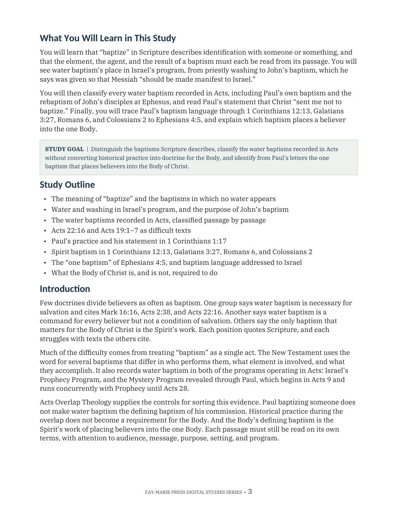
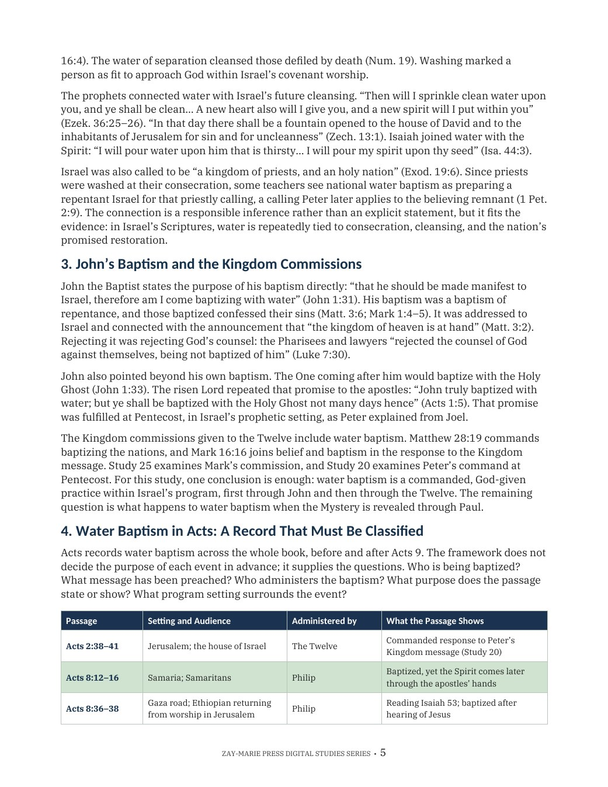
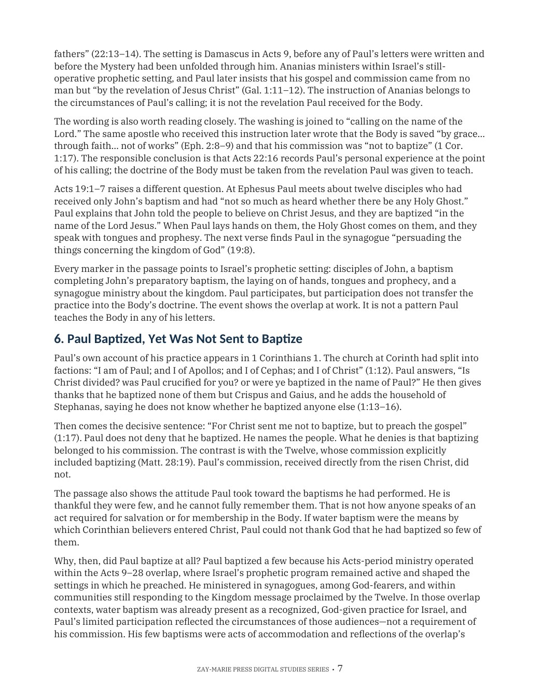
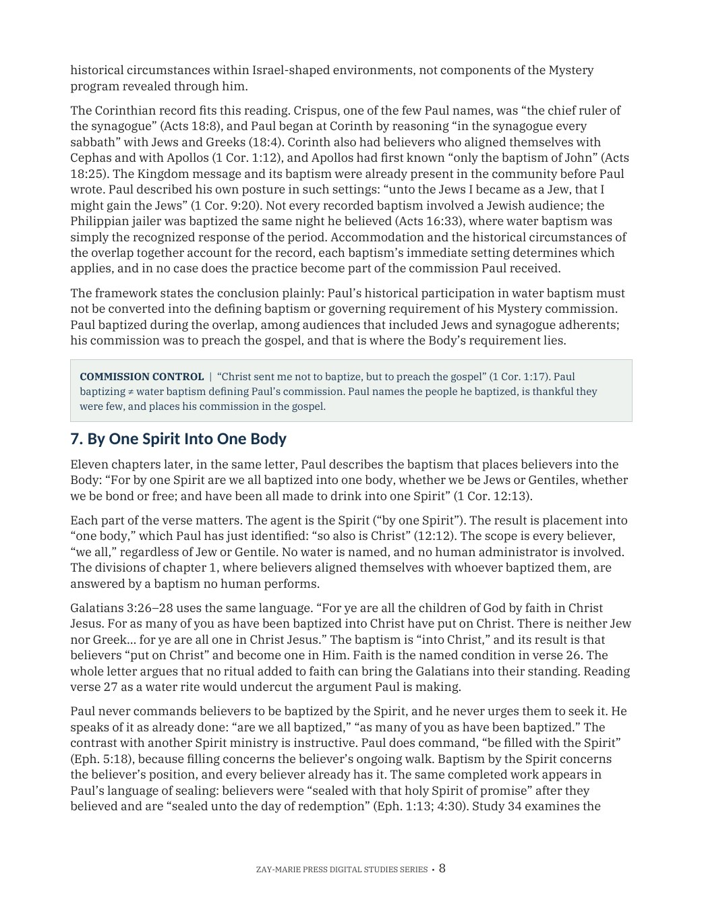

One Baptism
Water Baptism, Spirit Baptism, and the Body of Christ
A Biblical Examination of Baptism’s Meaning, the Water Baptisms in Acts, and the Baptism Paul Teaches the Body
Paul writes that there is “one baptism.” Yet Scripture records John’s baptism, the baptism commanded by the Twelve, baptisms during Paul’s own ministry, a baptism by one Spirit into one body, and a baptism unto Moses in which no one got wet.
This study defines baptism from Scripture, classifies every water baptism recorded in Acts, and follows Paul’s own teaching to the one baptism that places every believer into the Body of Christ.
Many Baptisms, One Baptism
Baptism in Scripture means identification, and the element varies: water, the Spirit, suffering, even a cloud and a sea. Reading each baptism by its agent, element, and result removes most of the contradictions readers find when every use of the word is assumed to mean the same act.
Water baptism belongs to Israel’s program, from priestly washing to John’s baptism and the commission of the Twelve, and it continues throughout Acts. Paul baptized a few people during the overlap, yet wrote that Christ “sent me not to baptize.” In his letters, the Body’s baptism is the Spirit’s work of placing every believer into Christ.
This is not a study of Peter’s Pentecost command in isolation, which Study 20 reads in its own audience and setting, nor of Mark 16’s sign commission joining belief and baptism, which Study 25 examines on its own terms, nor of the Spirit’s repeated fillings in Acts, which Study 34 distinguishes from a once-for-all baptism. Its task is broader: to classify every baptism Scripture names — by agent, element, and result — and to identify which one alone places a believer into the Body.
How These Studies Relate
Study 42 defines baptism from Scripture and identifies from Paul’s letters the one baptism that places believers into the Body of Christ.
Study 20 — Understanding Acts 2:38 Read Peter’s Pentecost command to Israel in detail; this study classifies it among the many baptisms Scripture describes.
Study 25 — The Signs That Followed Examine the Kingdom commission that joins belief and baptism in Mark 16, which this study distinguishes from Paul’s commission.
Study 34 — Filled Again Follow the Spirit’s fillings in Acts, which this study distinguishes from the Spirit’s once-for-all baptism into the one Body.
Let Each Baptism Be Read on Its Own Terms
What “Baptize” Means
See why baptism means identification, including baptisms in which no water touches anyone.
Water in Israel’s Program
Trace priestly washing, the prophets’ promised cleansing, and John’s stated purpose for his baptism.
Every Baptism in Acts
Classify each recorded water baptism by audience, administrator, order, and stated purpose.
The Difficult Texts
Work through Acts 22:16, Acts 19:1–7, and Peter’s own comment on Cornelius in Acts 11:16.
Not Sent to Baptize
Read 1 Corinthians 1:13–17, and see why Paul baptized a few during the overlap without making it part of his commission.
The One Baptism
Follow 1 Corinthians 12:13, Galatians 3:27, Romans 6, and Colossians 2 to Ephesians 4:5.
Examine the Passages for Yourself
1 Corinthians 10:1–2
Israel was baptized unto Moses in the cloud and in the sea while crossing on dry ground.
John 1:31
John baptized with water so that Messiah would be made manifest to Israel.
Acts 11:16
Peter remembers that John baptized with water, but they would be baptized with the Holy Ghost.
Acts 22:16
Ananias’s instruction at Paul’s calling, read in its own setting.
1 Corinthians 1:17
“Christ sent me not to baptize, but to preach the gospel.”
1 Corinthians 12:13
By one Spirit every believer is baptized into one body.
Romans 6:3–4; Colossians 2:11–12
Buried and raised with Christ through the operation of God, with a circumcision made without hands.
Ephesians 4:4–6
One body, one Spirit, one Lord, one faith, one baptism.
The Baptism That Makes the Body One
“Paul does not write ‘one water baptism and one Spirit baptism.’ He writes ‘one baptism.’”
Water baptism was commanded in Israel’s program and continued throughout Acts. The baptism Paul names among the unities of the Body is the one that makes the Body one: the Spirit’s placement of every believer into Christ.
Preview the Study Before You Purchase
Click any page to enlarge it for reading.
{kind=link}

What You Will Learn
See the study’s goal, outline, and the question it sets out to answer.
{kind=link}

Water Baptism in Acts
Begin classifying the baptisms Acts records, from Pentecost to Ephesus.
{kind=link}

Not Sent to Baptize
Read Paul’s account of the baptisms he performed and why he baptized a few during the overlap.
{kind=link}

By One Spirit Into One Body
See how the Corinthian record fits the overlap, then begin the Spirit’s baptism into the one Body.
A Focused Study Built for
Understanding and Teaching
15-Page In-Depth Biblical Study
A careful study of baptism in Scripture and the one baptism of the Body.
11 Core Teaching Sections
Progress from the word’s meaning through Israel, Acts, and Paul’s letters.
Two Reference Tables
Compare the baptisms of Scripture and classify every water baptism in Acts.
Four Worked Tests
Test four common claims about baptism, including baptism as a commanded public testimony.
14 Review Questions
Test the study’s distinctions concerning agent, element, audience, and program.
Teaching Outline
A ready framework for teaching the doctrine of baptism with precision.
Guided Further Study
Return to Israel’s washings, John’s baptism, Acts, and Paul’s letters with directed questions.
Final Synthesis Exercise
Bring the evidence together in one concise, Scripture-based explanation.
One Baptism
15-page digital PDF · For personal use
Want More Than a Focused Study?
Digital Studies examine particular biblical subjects and difficult passages. The 40-lesson Biblical Hermeneutics course teaches a complete, repeatable method for establishing meaning in context, determining proper assignment, and making responsible application.